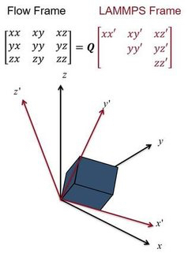

fix nvt/uef command¶
fix npt/uef command¶
Syntax¶
fix ID group-ID style_name erate edot_x edot_y temp Tstart Tstop Tdamp keyword value ...
ID, group-ID are documented in fix command
style_name = nvt/uef or npt/uef
Tstart, Tstop, and Tdamp are documented in the fix npt command
edot_x and edot_y are the strain rates in the x and y directions (1/(time units))
one or more keyword/value pairs may be appended
keyword = ext or strain or iso or x or y or z or tchain or pchain or tloop or ploop or mtk ext value = x or y or z or xy or yz or xz = external dimensions sets the external dimensions used to calculate the scalar pressure strain values = e_x e_y = initial strain usually not needed, but may be needed to resume a run with a data file. iso, x, y, z, tchain, pchain, tloop, ploop, mtk keywords documented by the fix npt command
Examples¶
fix uniax_nvt all nvt/uef temp 400 400 100 erate 0.00001 -0.000005
fix biax_nvt all nvt/uef temp 400 400 100 erate 0.000005 0.000005
fix uniax_npt all npt/uef temp 400 400 300 iso 1 1 3000 erate 0.00001 -0.000005 ext yz
fix biax_npt all npt/uef temp 400 400 100 erate -0.00001 0.000005 x 1 1 3000
Description¶
This fix can be used to simulate non-equilibrium molecular dynamics (NEMD) under diagonal flow fields, including uniaxial and bi-axial flow. Simulations under continuous extensional flow may be carried out for an indefinite amount of time. It is an implementation of the boundary conditions from (Dobson), and also uses numerical lattice reduction as was proposed by (Hunt). The lattice reduction algorithm is from (Semaev). The fix is intended for simulations of homogeneous flows, and integrates the SLLOD equations of motion, originally proposed by Hoover and Ladd (see (Evans and Morriss)). Additional detail about this implementation can be found in (Nicholson and Rutledge).
Note that NEMD simulations of a continuously strained system can be performed using the fix deform, fix nvt/sllod, and compute temp/deform commands.
The applied flow field is set by the eps keyword. The values edot_x and edot_y correspond to the strain rates in the xx and yy directions. It is implicitly assumed that the flow field is traceless, and therefore the strain rate in the zz direction is eqal to -(edot_x + edot_y).
Note
Due to an instability in the SLLOD equations under extension, fix momentum should be used to regularly reset the linear momentum.
The boundary conditions require a simulation box that does not have a consistent alignment relative to the applied flow field. Since LAMMPS utilizes an upper-triangular simulation box, it is not possible to express the evolving simulation box in the same coordinate system as the flow field. This fix keeps track of two coordinate systems: the flow frame, and the upper triangular LAMMPS frame. The coordinate systems are related to each other through the QR decomposition, as is illustrated in the image below.
During most molecular dynamics operations, the system is represented in the LAMMPS frame. Only when the positions and velocities are updated is the system rotated to the flow frame, and it is rotated back to the LAMMPS frame immediately afterwards. For this reason, all vector-valued quantities (except for the tensors from compute pressure/uef and compute temp/uef) will be computed in the LAMMPS frame. Rotationally invariant scalar quantities like the temperature and hydrostatic pressure are frame-invariant and will be computed correctly. Additionally, the system is in the LAMMPS frame during all of the output steps, and therefore trajectory files made using the dump command will be in the LAMMPS frame unless the dump cfg/uef command is used.
Temperature control is achieved with the default Nose-Hoover style thermostat documented in fix npt. When this fix is active, only the peculiar velocity of each atom is stored, defined as the velocity relative to the streaming velocity. This is in contrast to fix nvt/sllod, which uses a lab-frame velocity, and removes the contribution from the streaming velocity in order to compute the temperature.
Pressure control is achieved using the default Nose-Hoover barostat documented in fix npt. There are two ways to control the pressure using this fix. The first method involves using the ext keyword along with the iso pressure style. With this method, the pressure is controlled by scaling the simulation box isotropically to achieve the average pressure only in the directions specified by ext. For example, if the ext value is set to xy, the average pressure (Pxx+Pyy)/2 will be controlled.
This example command will control the total hydrostatic pressure under uniaxial tension:
fix f1 all npt/uef temp 0.7 0.7 0.5 iso 1 1 5 erate -0.5 -0.5 ext xyz
This example command will control the average stress in compression directions, which would typically correspond to free surfaces under drawing with uniaxial tension:
fix f2 all npt/uef temp 0.7 0.7 0.5 iso 1 1 5 erate -0.5 -0.5 ext xy
The second method for pressure control involves setting the normal stresses using the x, y , and/or z keywords. When using this method, the same pressure must be specified via Pstart and Pstop for all dimensions controlled. Any choice of pressure conditions that would cause LAMMPS to compute a deviatoric stress are not permissible and will result in an error. Additionally, all dimensions with controlled stress must have the same applied strain rate. The ext keyword must be set to the default value (xyz) when using this method.
For example, the following commands will work:
fix f3 all npt/uef temp 0.7 0.7 0.5 x 1 1 5 y 1 1 5 erate -0.5 -0.5
fix f4 all npt/uef temp 0.7 0.7 0.5 z 1 1 5 erate 0.5 0.5
The following commands will not work:
fix f5 all npt/uef temp 0.7 0.7 0.5 x 1 1 5 z 1 1 5 erate -0.5 -0.5
fix f6 all npt/uef temp 0.7 0.7 0.5 x 1 1 5 z 2 2 5 erate 0.5 0.5
These fix computes a temperature and pressure each timestep. To do this, it creates its own computes of style “temp/uef” and “pressure/uef”, as if one of these two sets of commands had been issued:
compute fix-ID_temp group-ID temp/uef
compute fix-ID_press group-ID pressure/uef fix-ID_temp
compute fix-ID_temp all temp/uef
compute fix-ID_press all pressure/uef fix-ID_temp
See the compute temp/uef and compute pressure/uef commands for details. Note that the IDs of the new computes are the fix-ID + underscore + “temp” or fix_ID + underscore + “press”.
Restart, fix_modify, output, run start/stop, minimize info¶
The fix writes the state of all the thermostat and barostat variables, as well as the cumulative strain applied, to binary restart files. See the read_restart command for info on how to re-specify a fix in an input script that reads a restart file, so that the operation of the fix continues in an uninterrupted fashion.
Note
It is not necessary to set the strain keyword when resuming a run from a restart file. Only for resuming from data files, which do not contain the cumulative applied strain, will this keyword be necessary.
This fix can be used with the fix_modify temp and press options. The temperature and pressure computes used must be of type temp/uef and pressure/uef.
This fix computes the same global scalar and vector quantities as fix npt.
The fix is not invoked during energy minimization.
Restrictions¶
This fix is part of the USER-UEF package. It is only enabled if LAMMPS was built with that package. See the Build package doc page for more info.
Due to requirements of the boundary conditions, when the strain keyword is set to zero (or unset), the initial simulation box must be cubic and have style triclinic. If the box is initially of type ortho, use change_box before invoking the fix.
Note
When resuming from restart files, you may need to use box tilt large since lammps has internal criteria from lattice reduction that are not the same as the criteria in the numerical lattice reduction algorithm.
Default¶
The default keyword values specific to this fix are exy = xyz, strain = 0 0. The remaining defaults are the same as for fix npt except tchain = 1. The reason for this change is given in fix nvt/sllod.
(Dobson) Dobson, J Chem Phys, 141, 184103 (2014).
(Hunt) Hunt, Mol Simul, 42, 347 (2016).
(Semaev) Semaev, Cryptography and Lattices, 181 (2001).
(Evans and Morriss) Evans and Morriss, Phys Rev A, 30, 1528 (1984).
(Nicholson and Rutledge) Nicholson and Rutledge, J Chem Phys, 145, 244903 (2016).